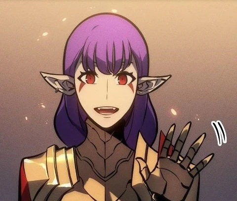

Esil Radiru
Affiliation: Monarchs
Class: C Grade
Parents: Deceaded
Biography
Esil is the eldest princess of the former Radiru Clan, and is in line to become the Monarch of Gluttony, The queen of Demons, and decendent of the Monarch of White Flames.
Abilities
-
🔸 Enhanced Strength & Speed
Due to being a former High Ranking Demon the Strength and Speed that she possesses is comparable to that of an S rank Hunter, before she was drained of blood and energy due to lower ranking demons working with Outer Gods to take over.
-
🔸 Demon Strike
A skill that lets her send her energy of being the decendent of White Flames to Sung Suho, to discharge as a powerful blast.